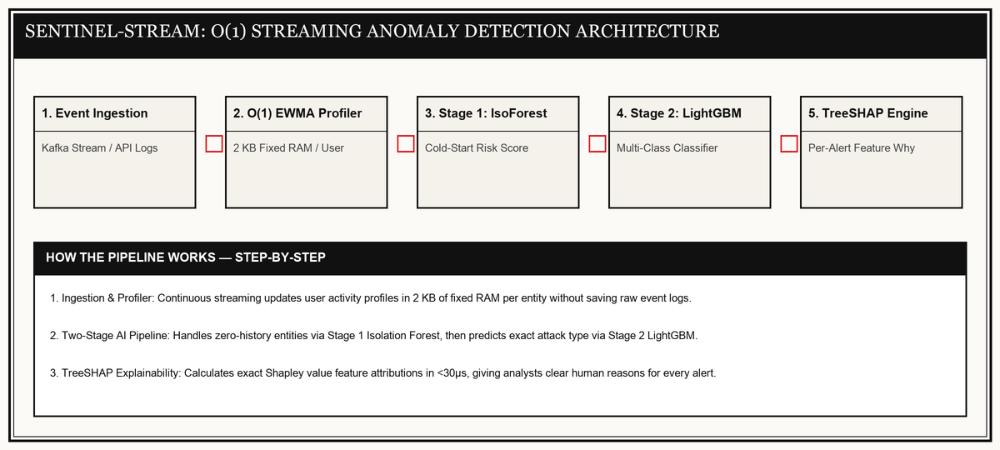

FIELD DISPATCH — AI CYBERSECURITY & BEHAVIORAL UEBA
SENTINEL-STREAM
The AI Security Guard That Detects Rogue Accounts & Data Theft in Real Time Without Crashing Servers
Why I Built SENTINEL-STREAM
I built SENTINEL-STREAM after noticing a pattern in how security tools actually fail in practice: it's rarely that they can't detect something unusual, it's that they detect too much, too vaguely, and analysts stop trusting the alerts. I wanted to build a behavioral anomaly engine that solved the boring, unglamorous parts of that problem properly — bounded memory that doesn't grow forever as more entities get monitored, meaningful scoring for entities with zero history, and an explanation attached to every single alert instead of a bare confidence score. This became my submission to Honeywell's own Q4 hackathon problem statement on behavioral anomaly detection.
Catching Stolen Credentials Before Damage Happens
Picture a mid-sized company's security team monitoring thousands of employee accounts and IoT devices. A contractor's credentials get compromised, and the attacker logs in from an unfamiliar location at an unusual hour, then starts quietly accessing a finance database this account has never touched before. A rule-based tool would either miss this (nothing here breaks a hard rule) or bury it under hundreds of other low-quality alerts. SENTINEL-STREAM scores this event in real time using the contractor's own behavioral baseline, flags it within milliseconds even though the account has limited history, and hands the analyst a plain-language reason — unusual login velocity, first-time resource access — instead of a bare "anomaly detected."
O(1) Streaming Profiler & Threat Pipeline

Live Threat Radar & AI Explanation Workbench
Select an enterprise threat scenario below to trigger real-time AI evaluation and inspect live terminal log output:
| Timestamp | User Account | Observed Event | Threat Level | Latency | Plain-English AI Explanation |
|---|---|---|---|---|---|
| 18:56:01 | sarah_marketing | Opened standard project documents | SAFE (NOMINAL) | 1.42 ms | Activity matches normal daily baseline behavior. |
6-Stage Execution Pipeline
01 Event Ingestion
Raw audit logs (logins, database access, file downloads) stream in via REST API or Kafka queues without dropping client connections.
02 Streaming Feature Engineering
Builds a 21-feature vector on the fly using EWMA rolling averages and Count-Min Sketch tables, updating statistics in fixed memory without saving raw logs.
03 Stage 1: Isolation Forest Cold-Start Prior
Evaluates structural anomaly distance for brand-new users or devices with zero historical logs, eliminating cold-start vulnerability.
04 Stage 2: LightGBM Threat Classifier
Classifies the exact attack category (Brute Force, Impossible Travel, Data Theft) by evaluating features in a fast decision tree.
05 TreeSHAP Explainability Engine
Walks decision tree paths directly to calculate exact feature attributions, explaining why the alert fired in microseconds.
06 Live Dashboard Stream
Pushes explained alert payloads directly to security analyst dashboards over persistent Server-Sent Events (SSE).
Verified Results
Constant O(1) Memory Scaling Per User
Rather than keeping endless historical log arrays that crash servers over time, SENTINEL-STREAM calculates rolling stats in a fixed 4.2 KB memory footprint per user. Memory per user stays constant O(1) forever regardless of log volume, while total system RAM scales smoothly with active user count.
Explore the Project Source Code
What I'd improve next: If I were building this for production next, I would implement adaptive Count-Min Sketch resizing to dynamically adjust memory depth based on entity traffic density, and migrate the feature pipeline to Rust for sub-millisecond end-to-end ingestion.